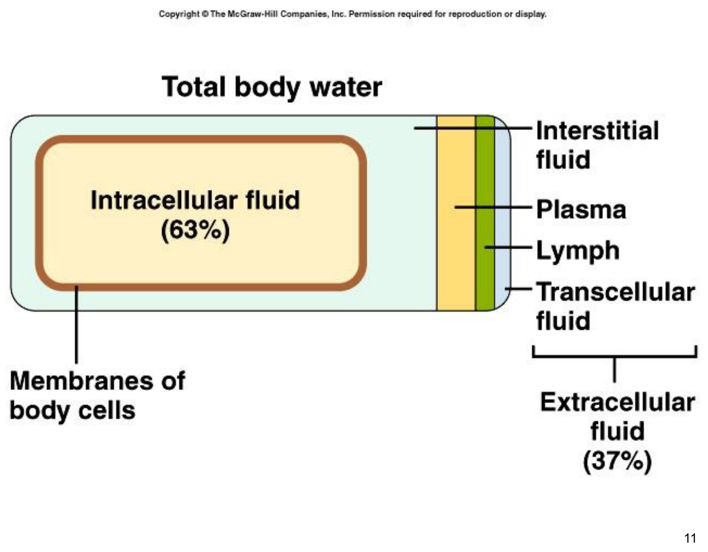
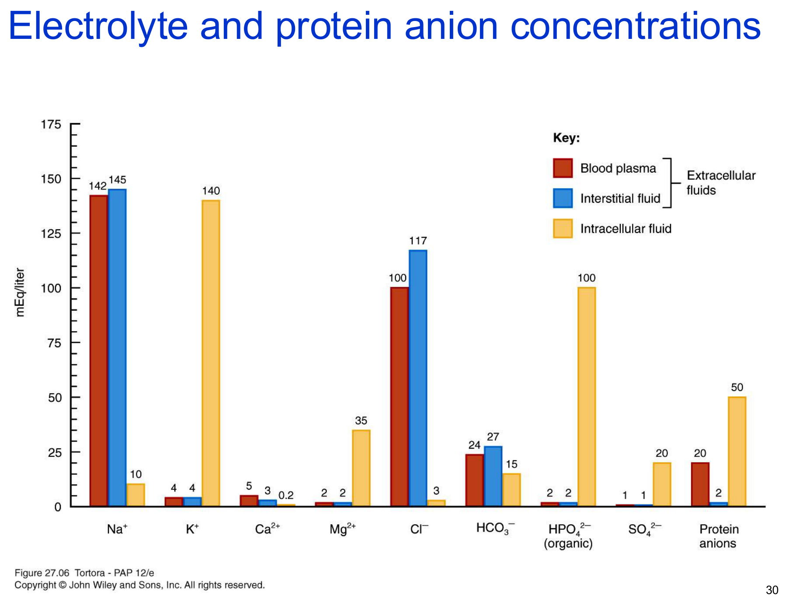
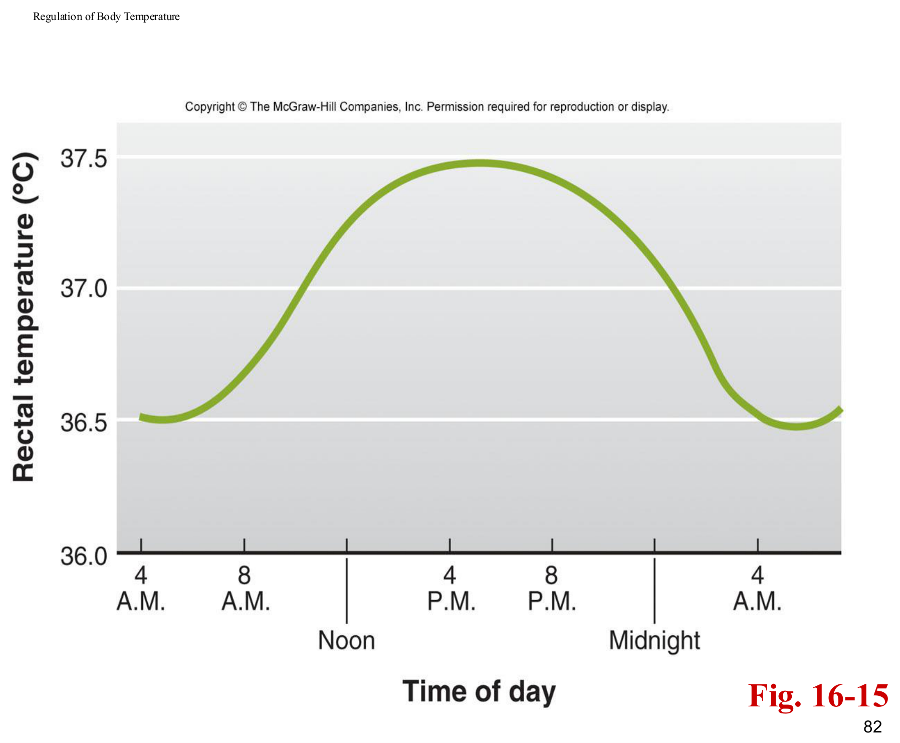

體液區隔與體液平衡
水是體內最重要的組成物質，體液依所在位置分為兩大區隔，理解此分區架構是理解所有體液電解質調控機轉的空間基礎。

體液的功能
體液不僅是溶劑，更主動參與：物質運輸（養分、激素、蛋白質）、代謝廢物移除、提供細胞代謝的介質環境、體溫調節、關節潤滑，以及構成各體腔（漿膜腔、肋膜腔等）液體成分。
兩道分隔體液區隔的屏障
分隔細胞內液（ICF）與組織間液
分隔組織間液與血漿
體液平衡指水分與溶質的量在各區隔間維持正確比例的狀態；能解離成離子的無機物稱為電解質（electrolyte），是體液平衡調控的核心角色。
每日水分獲得與流失
水分獲得主要來自飲水攝取，也包含食物含水與代謝水（細胞氧化代謝產生的水）；水分流失則經尿液（最大宗且受調控程度最高）、糞便、皮膚蒸發與呼吸道水氣散失（非顯性流失，insensible loss）、以及流汗（顯性流失，可依環境溫度與活動量大幅變動）。
水分獲得主要由飲水量調控（受口渴機制驅動）；體液滲透壓主要由腎臟尿液水分流失量決定；體液容積則主要由腎臟鈉離子流失量決定——這三條調控槓桿分工明確，是理解後續ADH、RAAS、ANP等激素各自主要調控目標（滲透壓 vs 容積）的關鍵框架。
滲透壓與水分子移動規則
滲透壓調控是理解體液電解質失衡最重要的核心概念，可以用幾條簡單、好記的口訣掌握絕大多數的臨床情境。
核心口訣
鈉離子占血漿滲透壓約80%，水永遠跟隨鹽（滲透壓高的一側）移動
白蛋白是主要的膠體滲透壓（COP，oncotic pressure）來源，低白蛋白血症會降低COP、影響水分分布
高血糖同樣可產生滲透效應，拉動水分（是糖尿病滲透性利尿與脫水的機轉之一）
細胞的腫脹與皺縮
正常情況下細胞內液與組織間液滲透壓相等，細胞不腫不縮；組織間液滲透壓上升（如高鈉血症）會使水分被拉出細胞，細胞皺縮；組織間液滲透壓下降（如低鈉血症）則使水分進入細胞，細胞腫脹。滲透壓變化最常見的成因是鈉離子濃度改變。
短時間內攝取水分速度超過腎臟排出能力（如短時間內灌服大量清水），會造成細胞外液被急遽稀釋（低滲透壓狀態），水分大量進入細胞造成腦細胞腫脹，臨床可表現抽搐、昏迷甚至死亡——是急重症與犬貓灌腸/大量飲水情境需特別警覺的併發症。
水分移動的推力與拉力
靜水壓（hydrostatic pressure）具「推力」——微血管血壓將水分推出血管；滲透壓（osmotic/oncotic pressure）具「拉力」——組織間液或血漿中的溶質（尤其膠體蛋白）將水分拉回，此概念與「血管生理學」章節淨過濾壓（NFP）公式完全一致。
體液移位的臨床情境
體液並非總是均勻分布，特定病理情境下會發生「移位」，理解這些移位機轉有助於解讀腹水、肋膜積液等常見臨床表現。
第三空間效應 Third Spacing
指體液從血管內移至身體某處不易與其餘細胞外液自由交換的區域（跨細胞腔室，如關節腔、腦脊髓液腔、腹膜腔、肋膜腔），使這部分體液暫時「無法被功能性利用」。
源自發炎反應，通常富含蛋白質/白蛋白；蛋白質本身具滲透拉力，會吸引更多液體進入該腔室，形成惡性循環般的積液累積
源自肝衰竭等低白蛋白狀態，蛋白質含量低，因血漿COP下降、微血管壓力相對顯著，使液體滲出血管卻無法被有效留在血管內
腹水（ascites）常見於肝衰竭動物，因低白蛋白血症降低血漿膠體滲透壓，使微血管靜水壓相對優勢、液體滲漏至腹膜腔；肋膜積液（pleural effusion）則是液體積聚於肋膜腔，可能源自滲出（發炎/腫瘤）或漏出（低白蛋白）機轉，兩者臨床處置方向不同，鑑別積液性質（穿刺液分析：蛋白質濃度、細胞數）是臨床重要步驟。
主要電解質總論
電解質具四大共通功能：調控水分在體液區隔間的滲透移動、協助維持酸鹼平衡、傳導電流（神經肌肉興奮性）、作為酵素輔因子。理解各電解質的分布特徵與調控激素，是本章的核心骨架。

七大電解質功能與調控總表
| 電解質 | 主要分布 | 核心功能 | 主要調控 |
|---|---|---|---|
| 鈉 Na⁺ | ECF最主要陽離子（約90%細胞外陽離子） | 神經衝動傳導、肌肉收縮、體液電解質平衡；決定近半數ECF滲透壓 | 醛固酮↑再吸收；ADH（低鈉時停止分泌）；ANP↑排除 |
| 氯 Cl⁻ | ECF最主要陰離子 | 調節滲透壓、構成胃酸HCl | 隨Na⁺再吸收連動；ADH間接調控 |
| 鉀 K⁺ | ICF最主要陽離子 | 建立靜止膜電位、維持細胞容積、pH調節（與H⁺交換） | 醛固酮促集尿管主細胞分泌排除 |
| 碳酸氫根 HCO₃⁻ | ECF第二大陰離子 | 細胞外液最主要的化學酸鹼緩衝對成分 | 腎臟為主要調控者（見下節） |
| 鈣 Ca²⁺ | 98%存於骨骼牙齒，ECF為主要陽離子型式 | 凝血、神經傳導物質釋放、肌肉張力與興奮性 | PTH↑（促骨釋放＋促腎再吸收＋促calcitriol生成）；calcitonin↓ |
| 磷酸鹽 Phosphate | 85%存於骨骼牙齒（鈣磷鹽），15%游離於ICF為主 | 細胞內重要pH緩衝物質（HPO₄²⁻） | PTH↓腎再吸收（促排出）；calcitriol↑腸道吸收 |
| 鎂 Mg²⁺ | 54%存於骨骼，ICF為第二常見陽離子 | 酵素（含Na⁺/K⁺幫浦）輔因子、神經肌肉活性、心肌功能；PTH分泌依賴Mg²⁺ | 依尿液排出速率調節血漿濃度 |
Na⁺/K⁺-ATPase幫浦是維持「ECF高鈉、ICF高鉀」這個貫穿全身細胞的基本電化學梯度的核心引擎，也是理解靜止膜電位（見「神經元訊號與神經系統構造」章節）與幾乎所有次級主動運輸（見「腎臟生理學基礎」章節）的共同起點。
化學緩衝系統
維持動脈血pH在7.35–7.45的狹小範圍是重大的恆定挑戰，因蛋白質三級構形對pH極度敏感。身體以三層防禦對抗酸鹼失衡：化學緩衝系統（秒級）、呼吸系統（分鐘級）、腎臟排除系統（時至日級）。
三大化學緩衝系統
ICF與血漿中最豐富的緩衝物質（血紅素、白蛋白），約貢獻全身75%化學緩衝能力；胺基與羧基可分別結合/釋放H⁺
ECF最重要的緩衝對；因CO₂/H₂O互相轉換構成，故無法對抗因呼吸問題本身造成的CO₂過多或不足（此系統的原料/產物CO₂本身失調時，緩衝系統失去意義）
ICF重要陰離子緩衝物質，在細胞質與尿液中的pH調節皆扮演重要角色（見下節腎臟酸鹼機轉）
化學緩衝系統的作用本質是快速暫時結合H⁺、緩和pH劇烈變化，但並未真正將H⁺移出體外——真正的H⁺淨移除，仍依賴呼吸系統（排出CO₂）與腎臟系統（排出H⁺、回收HCO₃⁻）兩套生理性緩衝系統。
呼吸性 vs 腎臟性緩衝系統的速度與容量比較
| 反應速度 | 緩衝容量 | |
|---|---|---|
| 呼吸緩衝系統 | 快（數分鐘內起效） | 較小 |
| 腎臟（泌尿）緩衝系統 | 慢（需數小時至數日） | 最大（緩衝最大量的酸負荷） |
腎臟酸鹼調節機轉
腎臟是唯一能真正「淨移除」酸負荷、並重新生成碳酸氫根的器官，其機轉核心是H⁺分泌與HCO₃⁻再吸收兩個相輔相成的過程。
氫離子分泌 vs 碳酸氫根再吸收
血液中的H⁺已被緩衝（多與蛋白質結合），並非以游離態被腎絲球過濾；腎臟排酸主要透過腎小管細胞主動分泌H⁺進入管腔完成。分泌的H⁺在管腔中與尿液緩衝物質結合後排出，此過程同時驅動等量HCO₃⁻的再吸收（見下方機轉）。正常情況下，腎臟需完全再吸收所有經腎絲球過濾的HCO₃⁻（否則將造成HCO₃⁻流失、破壞酸鹼平衡），此再吸收約80–90%發生於近曲小管，其餘由亨利氏環上行支厚段、遠曲小管、皮質集尿管完成微調。
尿液中的兩種H⁺緩衝物質
分泌的H⁺與濾液中的HPO₄²⁻結合形成H₂PO₄⁻排出，是「可滴定酸」的主要成分
近曲小管經氨生成作用（ammoniagenesis）產生NH₃，NH₃與分泌的H⁺結合形成NH₄⁺（銨離子陷阱，ammonium trapping），於集尿管排出；是應對酸負荷增加時最主要的適應性調升機制，也是額外生成HCO₃⁻的重要來源
慢性酸負荷增加（如慢性代謝性酸中毒）時，身體最主要的長期代償是大幅增加銨離子的生成與排除，而非單純增加磷酸鹽緩衝（磷酸鹽緩衝容量有限）；此機轉同時生成新的HCO₃⁻補回血液，是腎臟能「淨生成」鹼儲備、而非僅被動回收既有HCO₃⁻的關鍵。
酸鹼失衡分類與代償
酸鹼失衡依據原發變化來自呼吸系統（PCO₂）或代謝/腎臟系統（HCO₃⁻），分為四大類，是臨床血液氣體分析判讀的核心架構。
| 類型 | 原發變化 | 常見病因 | 代償方向 |
|---|---|---|---|
| 呼吸性酸中毒 | PCO₂異常升高 | 肺氣腫、肺水腫、呼吸道阻塞（CO₂排出不足） | 腎臟代償：增加H⁺排除、HCO₃⁻再吸收 |
| 呼吸性鹼中毒 | PCO₂異常降低 | 過度換氣（高海拔缺氧、肺病、中風、嚴重焦慮） | 腎臟代償：減少H⁺排除、HCO₃⁻再吸收 |
| 代謝性酸中毒 | HCO₃⁻異常降低 | 嚴重腹瀉流失HCO₃⁻、腎功能不全、酮酸中毒（糖尿病）、蛋白質代謝酸負荷排除障礙 | 呼吸代償：過度換氣排出CO₂ |
| 代謝性鹼中毒 | HCO₃⁻異常升高 | 嚴重嘔吐（流失胃酸）、過量鹼性藥物、某些利尿劑、嚴重脫水 | 呼吸代償：換氣不足保留CO₂ |
代償的完全與部分
完全代償：血液pH被拉回正常範圍（7.35–7.45），但PCO₂與HCO₃⁻仍偏離正常值；部分代償：pH仍在異常範圍，但已較未代償前有所改善。呼吸性代償啟動快（數分鐘）但代償能力有限；腎臟代償啟動慢（1–2天內完全發揮效果）但代償能力強大。
代謝性酸中毒：嚴重腹瀉（流失HCO₃⁻）、糖尿病酮酸中毒（酮體堆積）、腎衰竭（H⁺排除障礙）——治療需靜脈給予碳酸氫鈉並矯正病因。代謝性鹼中毒：嚴重嘔吐流失胃酸（尤其上消化道阻塞反覆嘔吐的動物）、某些利尿劑使用——治療需矯正Cl⁻/K⁺等電解質缺乏並矯正病因。
能量代謝與基礎代謝率
代謝過程中約60%的能量以熱能形式釋放，其餘用於作功；這股代謝熱是維持體溫恆定的主要熱量來源，理解基礎代謝率（BMR）的決定因子有助於理解體重管理與體溫調節的交集。
決定基礎代謝率的四大因子
是單一最重要的BMR決定因子，透過增加細胞耗氧量與代謝率產生「產熱效應（calorigenic effect）」，體溫因而上升；甲狀腺機能亢進動物常見食慾增加但體重仍下降（詳見「內分泌生理II」章節）
由腎上腺髓質分泌，同樣具產熱效應，促進肝醣與三酸甘油酯的分解與再合成循環（兩者過程皆消耗ATP、釋放熱能），是情緒壓力狀態下額外產熱的部分原因
進食後數小時內代謝率可增加10–20%，蛋白質引發的效應最顯著，多數額外產熱來自肝臟處理吸收養分的代謝過程
對代謝率影響幅度最大的單一因子；睡眠時肌肉張力下降使代謝率降低，低溫環境下顫抖（見下節）大幅提升代謝率與產熱量
總體能量平衡方程式
食物攝取能量 = 內部產熱 ＋ 外部作功 ＋ 儲存能量，重新整理為：儲存能量 = 食物攝取能量 − (內部產熱 ＋ 外部作功)——此方程式是理解體重增減（能量儲存為正/負）的基本熱力學框架。
食慾調控
長期能量攝取與消耗的匹配，仰賴脂肪組織與腸胃道分泌的兩種激素對下視丘攝食中樞的相反調控，構成長期體重恆定的負回饋系統。
由脂肪組織依脂肪量比例分泌，作用於下視丘抑制神經肽Y（NPY）釋放，達到抑制食慾的效果；是長期體脂含量與食慾之間負回饋調控的核心訊號，體脂增加→leptin增加→食慾受抑制，理論上防止體重無限制上升
主要由胃部內分泌細胞分泌的28個胺基酸胜肽，作用於下視丘刺激NPY等攝食中樞神經肽釋放，增加飢餓感；同時減少脂肪分解、增加胃腸蠕動與胃酸分泌，為餐前上升、餐後下降的短期進食驅動訊號
瘦體素（長期、脂肪組織來源、抑制食慾）與飢餓素（短期、胃部來源、促進食慾）在下視丘NPY神經元上呈現相反的調控方向，是理解食慾調控的核心對比框架，也是肥胖症研究中「瘦體素阻抗（leptin resistance）」概念的生理基礎。
體溫調節
鳥類與哺乳類屬於恆溫動物（endotherm/homeotherm），能自行產生並調節體內熱量、不依賴環境（陽光）熱能，理解核心體溫的晝夜節律與產熱/散熱機轉，是體溫調節的完整框架。
核心體溫與量測
核心體溫（core body temperature）通常以直腸溫度代表，較口腔溫度高約0.5°C；體溫並非恆定不變的單一數值，而是依晝夜節律呈規律波動。

產熱控制 Control of Heat Production
經骨骼肌不自主節律性收縮增加代謝率、產生熱量，是成年動物低溫環境下最主要的急性產熱機制
經增加腎上腺素分泌與交感神經活性作用於棕色脂肪組織（brown adipose tissue），提升代謝產熱；在成年動物中貢獻極小，主要見於幼年／新生兒；棕色脂肪對甲狀腺素、腎上腺素與交感神經皆有反應性
散熱機制（依生理學基礎知識整理）
雖然本講義後段散熱機制的投影片內容較簡略，但依生理學基本原理，體熱散失主要透過四種物理機轉：輻射（radiation，體表以紅外線形式散熱）、傳導（conduction，直接接觸較冷物體散熱）、對流（convection，體表空氣或液體流動帶走熱量）、蒸發（evaporation，汗液或呼吸道水分蒸發吸熱，是環境溫度接近或超過體溫時唯一有效的散熱途徑）。行為性體溫調節（尋找陰涼處、改變姿勢增加/減少散熱面積、喘氣）與生理性體溫調節（皮膚血管舒縮調節體表血流、發汗、豎毛肌反應）共同構成完整的體溫調節反應。
下視丘視前區（preoptic area）作為體溫調節中樞，如同「恆溫器」持續比對核心體溫與設定點（set point）；發燒（fever）是體溫調節中樞的設定點被外源性/內源性熱原（pyrogen，如細菌內毒素刺激免疫細胞釋放的IL-1、IL-6等細胞激素）主動上調，此時身體會啟動顫抖、血管收縮等產熱與保熱機制以達到新的（較高的）設定點，與單純環境過熱導致的體溫過高（hyperthermia，中樞設定點未改變、是被動性體溫失控）機轉截然不同，臨床處置方向也不同（退燒藥 vs. 物理降溫）。
學習重點整理
本章橫跨體液、電解質、酸鹼、能量代謝、體溫調節五大主題，核心是「水follows鹽/蛋白質/葡萄糖」與「腎臟是最終、最強大的酸鹼與體液調控器官」兩條主軸。考題常考「電解質分布比較」「酸鹼失衡四分類與代償方向」「發燒vs.體溫過高機轉差異」。
練習題
涵蓋體液區隔、電解質恆定、酸鹼緩衝、酸鹼失衡分類、能量代謝與體溫調節等章節重點，題型參照國考與轉學考命題方向（含臨床病例題），先自己作答再點「顯示答案」核對。
白蛋白是決定血漿膠體滲透壓（COP）的主要成分，低白蛋白血症使COP下降，血管內留住水分的「拉力」減弱，微血管靜水壓的「推力」相對優勢，液體因而滲漏出血管、堆積於腹膜腔形成漏出液性質的腹水，這是「Water follows Protein」原則在肝衰竭腹水成因上的具體應用。
細胞外液（血漿與組織間液）最主要的陽離子是Na⁺（約占90%細胞外陽離子），最主要的陰離子是Cl⁻；細胞內液則相反，最主要陽離子是K⁺，最主要陰離子是磷酸鹽與蛋白質，此ECF/ICF電解質分布的鮮明對比是Na⁺/K⁺-ATPase持續運作維持的結果。
碳酸/碳酸氫根緩衝系統的緩衝對本身就是由CO₂與H₂O反應生成，因此當酸鹼失衡的原發原因正是CO₂本身過多或過少（呼吸性酸中毒/鹼中毒）時，此緩衝系統無法有效發揮作用（緩衝系統的組成物質本身就是問題所在），此時主要仰賴腎臟代償機制（調整HCO₃⁻再吸收與H⁺排除）來協助恢復pH平衡。
上消化道阻塞導致反覆嘔吐，會大量流失富含H⁺的胃酸（HCl），造成體內淨酸負荷減少、HCO₃⁻相對堆積，形成代謝性鹼中毒，這是「嚴重嘔吐」在酸鹼失衡分類中的經典臨床連結，需與下消化道疾病（腹瀉，流失HCO₃⁻，造成代謝性酸中毒）方向明確區分。
面對慢性、持續性的酸負荷增加，磷酸鹽緩衝系統因濾液中磷酸鹽濃度有限，緩衝容量不足以應付長期需求；此時腎臟最主要的適應性代償是大幅上調近曲小管的氨生成作用（ammoniagenesis），產生大量NH₃與分泌的H⁺結合形成NH₄⁺排出（銨離子陷阱機制），同時此過程會生成新的HCO₃⁻補回血液，是腎臟能長期、大量代償酸負荷的關鍵機轉。
發燒的核心機轉是下視丘體溫調節中樞（視前區）的「設定點（set point）」被熱原（pyrogen，如細菌內毒素刺激免疫細胞釋放的IL-1、IL-6等細胞激素）主動上調，身體因而主動啟動顫抖、皮膚血管收縮等產熱與保熱機制，努力將體溫「提升」至新的、較高的設定點，是一種主動性、受調控的體溫升高。體溫過高（如中暑）則是體溫調節中樞的設定點並未改變（仍是正常體溫），但因環境熱負荷超過身體散熱能力上限，導致實際體溫被動性地超出設定點、調節機制失控，屬於被動性的體溫失調。兩者臨床處置方向不同：發燒可考慮使用退燒藥（作用於下視丘降低設定點），體溫過高則需以物理性降溫（如冷水擦拭、環境降溫）為主，退燒藥對體溫過高效果有限甚至無效。
瘦體素由脂肪組織依體脂含量比例分泌，作用於下視丘抑制神經肽Y（NPY）釋放，達到長期抑制食慾、維持體重恆定的效果；飢餓素主要由胃部內分泌細胞分泌，作用方向相反，刺激NPY等攝食中樞神經肽釋放以促進食慾，是短期、餐前上升餐後下降的進食驅動訊號，兩者在下視丘NPY神經元上呈現方向相反的調控。